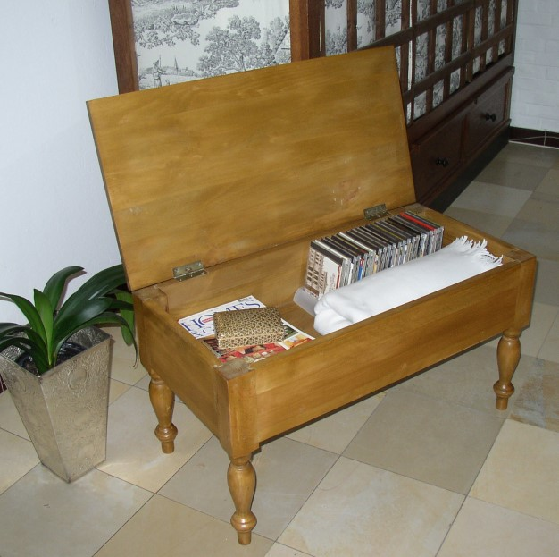

Neu-Vorstellung im Footstool Bereich:
"Die
Bank zum Aufklappen"
(storage footstool)
Aufwändig verarbeitet, außerordentlich belastbar und stabil
aus Buche-massiv gefertigt. - Natürlich auch wieder nach Ihren Bedürfnissen
und Abmessungen
Unsere Vorzeige-Bank:
"Malte"
Groesse: 80 cm x 40 cm x 45 cm
Höhe des Innenraumes: 14 cm
Beine: gedrechselt, nußbaumfarben gebeizt